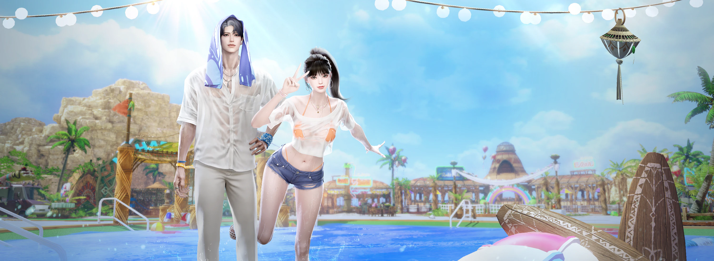

Korean Lost Ark · Patch Translation
July 8, 2026 Update — Chronomancer Launch & Summer Packages
Direct translation. No commentary or extrapolation added.

AI-generated translation. This English version was produced with AI assistance and may contain errors or mistranslations. Always verify against the original Korean notices linked in each section below.
On this page
Update Notice
Hello, this is the Lost Ark team.
The July 8 regular maintenance has ended. (10:00)
Please find below the details updated following the July 8 regular maintenance. We hope this information helps you enjoy Lost Ark without any inconvenience.
New Class ‘Chronomancer’ Added
The new class ‘Chronomancer’ has been updated.
- On the character creation screen, select ‘Specialist (Male)’ to create your character; upon logging in, you can begin your adventure in Trixion.
- Chronomancer has been added as a class entry across existing content.
- Chronomancer’s equipment and some avatar items have been added in the same composition as existing classes.
- 7 crafted avatar sets for Specialist (Male) have been added.
※ The remaining avatar crafting recipes will be added on 7/22 (Wed). - Chronomancer-class equipment has been added to the equipment chest granted on jumping.
- Chronomancer’s Awakening quest and skill-acquisition items have been added.
- New Chronomancer-related achievements and titles have been added.
- A Chronomancer-related trophy has been added.
- 1 Chronomancer-related LOA Talk icon has been added.
- The Recommended Skills feature is now available for Chronomancer.
※ For statistics-collection purposes, actual recommended skill data will be provided starting 7/15 (Wed).
Chronomancer Growth Support Event Guide
With the ‘Chronomancer’ update, a Chronomancer-exclusive growth support event is underway.
Chronomancer-Exclusive Event Jumping Ticket
- Ticket grant/use period: 2026-07-08 (Wed) – 2026-09-16 (Wed), before regular maintenance
- The Chronomancer-exclusive event jumping ticket can be claimed on accounts that have completed identity verification, and a total of 1 event jumping ticket may be used per verified identity.
- If you hold multiple accounts, using the event jumping ticket on one account makes it unusable on every other account under the same identity.
- Like the ‘Limeleake South II Event Pass,’ the Chronomancer-exclusive event jumping ticket lets you complete the Limeleake South Island continent quest and the Trail of Fate quest without having completed the previous continent’s quests.
- The Chronomancer-exclusive event jumping ticket can only be used on a Chronomancer character that satisfies one of the two conditions below:
- A Chronomancer character that has not completed the Limeleake South Island quest
- A Chronomancer character that has completed the Limeleake South Island quest and is below item level 1660
※ If you hold both the Chronomancer-exclusive jumping ticket and a general event jumping ticket, the Chronomancer-exclusive ticket is used first on a Chronomancer character.
Chronomancer Accelerated Growth Event
- The Chronomancer Accelerated Growth Event lets you grow a Chronomancer character and receive various growth-related items each time you reach a set item level.
- Character-designation period: 2026-07-08 (Wed) – 2026-09-16 (Wed), before regular maintenance
- Event progress period: 2026-07-08 (Wed) – 2026-10-14 (Wed), before regular maintenance
- The Chronomancer Accelerated Growth Event can be run on the account with your designated Mokoko Base Camp character, or on any account under the same identity.
※ You can designate an Accelerated Growth character on accounts that have completed identity verification; even if you own multiple accounts, only 1 account may run this event.
How to designate your Accelerated Growth character
- Use the ‘Chronomancer Accelerated Growth’ button on the left side of the minimap to designate the Chronomancer that will run the event.
- The Accelerated Growth Event and ‘Jump-Up! Boost’ can both be applied to the same character.
- The Accelerated Growth Event character cannot be changed once designated — please choose carefully.
- Before choosing your Accelerated Growth Event character, first check whether you’ve set a Mokoko Base Camp character.
- If you haven’t set a Mokoko Base Camp character yet:
- You must first designate a character to start Mokoko Base Camp.
- Your Mokoko Base Camp character can be a Chronomancer or any other class.
- If you set Chronomancer as your Mokoko Base Camp character:
- You can start the Accelerated Growth Event after the ‘Warming-Up! Program’ ends.
- If you set a different character as your Mokoko Base Camp character:
- You can start the Accelerated Growth Event once your Chronomancer reaches item level 1660.
- If you haven’t set a Mokoko Base Camp character yet:
Accelerated Growth Event Missions
- A character running the Accelerated Growth Event receives a reward each time it reaches a set item level.
- Using the Accelerated Growth equipment chest lets you reach item level 1700.
※ The Accelerated Growth equipment chest can be used by characters from item level 1660 up to (but not including) 1700. - Of the mission rewards, the following items are granted as roster-bound items:
- Accelerated Growth equipment chest, Karma’s Afterimage, Tempering: Prison of Thunder, Ancient Bracelet Chest, Ancient Accessory Set Chest
- The items below can be used until the 2026-10-21 (Wed) regular maintenance:
- Accelerated Growth equipment chest, Processed Gem of Order Chest I & II
- Using the Accelerated Growth equipment chest lets you reach item level 1700.
Chronomancer Accelerated Growth Premium Product Guide
- Chronomancer Accelerated Growth Premium is a product that a designated Accelerated Growth character can purchase to obtain items that help with growth.
- After purchasing the Accelerated Growth Premium product, completing an item-level mission also grants the Premium reward.
- Any Premium reward not claimed after completing a mission is, like other rewards, delivered by mail if you log in within 30 days of the event’s end, and remains available for 30 days.
- Chronomancer Accelerated Growth Premium takes effect immediately upon purchase and cannot be withdrawn/refunded after purchase.
- For further detail on the Chronomancer Accelerated Growth Event, please refer to the ‘Chronomancer Update’ page.
Improvements & Adjustments
[Customization]
2 new hairstyles have been added for every base class.
[Avatar Dyeing]
- 4 new dye patterns have been added.
- Pattern Group 13 — Heart Cherry / Military Camo / Wide Stripe / Marine
[‘Limeleake South Island II Event Pass’ Usage Criteria Change]
- The usage criteria for the ‘Limeleake South Island II Event Pass’ have been changed as follows:
- Before: usable by characters at or below item level 1660, or characters that have not completed the Limeleake continent world quest ‘A Continuing Duty’
- After: usable by characters below item level 1660, or characters that have not completed the Limeleake continent world quest ‘A Continuing Duty’
[Maharaka Summer Camp]
- The co-op quest ‘Dancing Maharaka’ has been improved as follows:
- The completion target count has been lowered from 100 to 75.
- The co-op quest grade criteria changed from elapsed time to completion count.
- The quest-objective refresh timing for the dance emote used in the co-op quest has been standardized to 5 seconds.
- The following line has been added to the ‘Dancing Maharaka’ co-op quest guide: even if you don’t reach the full target count, reaching the contribution threshold still grants the same reward.
[Cards]
- The support classes below can now set a separate elemental card deck according to their Tier-1 ‘Awakening’ Ark Passive:
- Bard, Paladin, Artist, Valkyrie
※ For these classes, you can set a separate card preset per elemental weakness, based on your currently active Tier-1 ‘Awakening’ Ark Passive.
※ Your existing elemental deck settings have been carried over identically to the newly added elemental decks — please update them to match your active ‘Awakening’ passive.
- Bard, Paladin, Artist, Valkyrie
- On leaving endgame content or a Guardian Raid area, your card preset now reverts to whichever preset was active before you entered.
※ If the game closes abnormally, the last-applied card preset may persist.
[System]
- Gem auto-equip now displays a warning message when your active Tier-1 ‘Awakening’ Ark Passive has a core equipped that affects the combat power of a different role than your own.
- The Jump-Up! Boost UI now has a context menu on each mission’s reward icon, so you can check its contents.
- The display priority of the ‘Arkesia Tour’ button on the left side of the minimap has been lowered relative to other buttons.
- Added a save point during Tikatuka so that if Tikatuka restarts while a bonus die is present after ‘Egg Toss,’ your progress at that point is preserved.
- In some trial/practice spaces, attempting to quit the game no longer shows free-item or expiring-item notices in the quit confirmation popup.
[Style Book]
- If a Style Book post has its avatar info set to public, you can now save that avatar’s dye information.
※ The dye-save feature isn’t available when changing appearance from the character-select screen.
- Added a feature to preview how the appearance and avatar registered in a Style Book post would look applied to your own character.
- If the post’s class differs from your character’s class, the preview applies the appearance of the class registered in the post.
※ The preview feature isn’t available when changing appearance from the character-select screen.
- If the post’s class differs from your character’s class, the preview applies the appearance of the class registered in the post.
[Achievements]
- Changed the objective of the ‘Hanumatan Strategy: Advanced’ achievement from destroying the gauntlets to destroying the greaves (foot armor).
- Destroy Hanumatan’s greaves N times
[Items]
- Reinforced the tooltip guidance on advanced honing usage for ‘Tempering: Agris’ Scale’ and ‘Tempering: Horn of Thunder.’
- Each item can be used as a material during advanced honing as follows:
- Tempering: Agris’ Scale — usable at advanced honing stages 1 and 2
- Tempering: Horn of Thunder — usable at advanced honing stages 3 and 4
- Each item can be used as a material during advanced honing as follows:
Bug Fixes
[Content]
- Fixed an issue in Shadow Raid ‘Kaltzein, Witch of Torment’ Gate 2 where a character who gained ‘Cornering Fear’ from Entanglement stacks right before dying, then entered ‘Grand Brawl,’ would remain alive with Entanglement active and unable to act.
- Fixed an issue in Shadow Raid ‘Kaltzein, Witch of Torment’ Gate 1 where, during the pattern where Kaltzein repeatedly throws nails at a character bound to a thorn wheel, the character could die but on rare occasions remain marked as still bound.
- Fixed an issue in Kazeros Raid ‘Act Finale: The Last Day’ Hard Gate 2 where, after being hit by ‘Kazeros, Avatar of Death,’ a character could rarely become unable to act.
- Fixed an issue in Kazeros Raid ‘Act Finale: The Last Day’ Single Mode Gate 2 where, after changing combat area and Just Guarding ‘Great Demon, Kazeros’’ charge in the counter-attack gimmick, using the hidden allied-forces skill after a successful counterattack would slow the ally NPC ‘Kadan’s’ movement.
※ Alongside this fix, the effect that slowed Kazeros at that same successful-counterattack moment has been removed. - Fixed an issue in Kazeros Raid ‘Act 3: Pitch Black, Night of the Storm’ Hard Gate 3 where, during the gimmick that plays when ‘Mordum, Judge of the Abyss’’ HP reaches 0, the Reaper ‘Nightmare’ skill marker would display in an odd position.
- Fixed an issue where ‘Urnil,’ appearing at Paradise: ‘Crucible’ Stage 6, would very rarely repeat only counterattacks under certain conditions.
[Combat]
- Fixed an issue where, during Machinist’s ‘Avalanche’ skill, inputting an extra combo could rarely reposition the character awkwardly back to its pre-hit location.
- Fixed an issue where Soulfist could retain an existing ‘Robust Spirit’ buff on reconnecting while already holding it, under certain conditions.
- Fixed an issue where using ‘Blink’ while in ‘Persona’ state, after activating the ‘Vital Point Detection’ passive, would cancel Persona for Reaper.
- Fixed the stagger-immunity buff icon not displaying when Souleater gains it from using ‘Threshing’ after activating the Order’s Star core ‘Reaper’s Might’ at 10P.
[Quests/Achievements]
- Fixed an issue in Mokoko Base Camp’s ‘Book of Fantasy’ where, during the ‘Stop the Fleeing Vaedan’ stage, Vaedan could become unattackable under certain conditions.
- Fixed an issue in the South Vern adventure quest ‘A Sun Rises Again’ where, during the ‘Talk to Adel’ step, viewing the quest location would show the NPC at the wrong position.
- Fixed an issue where a character mid-training at ‘Ancient Training Grounds’ via an existing event pass could not continue training upon logging back in after the 6/24 (Wed) update.
- Affected characters can now continue their Ancient Training Grounds progress upon login.
- Fixed an issue where completing character creation with ‘Random Appearance’ selected would intermittently fail to grant the ‘Never Mind the Face’ achievement.
- Fixed an issue where crafting the Tier 3 feasts/barbecues below using Tier 4 life materials (Abidos life materials) did not increment the related crafting achievement count.
- Feasts: Splendid Rivers and Mountains, More Is Better
- Barbecues: Charcoal-Grilled, Vernil Mixed Grill
- Fixed an issue where the currently unachievable ‘Achates Strategy: Advanced II’ achievement was displayed in the achievement UI.
- Alongside this fix, the achievement has been moved to the ‘Legacy’ category.
※ Titles already earned remain usable as before.
※ Achievements moved to ‘Legacy’ are excluded from grade-experience tallies, and grade experience from a previously earned achievement grade may be applied as a negative value.
- Alongside this fix, the achievement has been moved to the ‘Legacy’ category.
[System]
- Fixed an issue where using Ark Grid ‘Gem Auto-Equip’ kept combat power identical but auto-equipped a gem with different effects than the one previously equipped.
- Fixed an issue at the Trixion training grounds where, after resetting all character settings and saving a new core setup, the ‘Ark Grid’ tab in the character info window wouldn’t refresh immediately.
- Fixed an issue where choosing ‘Rewards Only’ for style-setting support would also save your skill/engraving/Ark Passive presets.
- Fixed an issue where attempting an equipment-preset change in place right after eating a feast at your Guild Estate would show a system message and fail to change the preset.
- Fixed an issue in Paradise: ‘Elysian’ where entering Crucible without applying the ‘Auto-Repeat Current Stage’ setting could intermittently show a related system message and block entry.
- Fixed an issue where, after interacting with the appearance-change NPC while playing with a gamepad, the gamepad D-pad would stop responding.
- Fixed a very-low-probability issue where the Base Camp shop wouldn’t display in the ‘Event Shop’ for a character mid-Jump-Up! Boost.
- Fixed incorrect quest-requirement guidance shown when interacting with the Honing NPC while the honing system is not yet unlocked.
- The honing system unlocks upon completing the North Kurzan world quest ‘The Path Ahead.’
- Fixed an issue where, after the 6/24 (Wed) update, a character who completed the Voldike world quest ‘Adento’s Legacy’ and then had the North Kurzan world quest ‘The Path Ahead’ auto-completed via Knowledge Transfer or jumping growth would fail to unlock the honing system.
- Affected characters have been granted an item, usable via the unified storage, that unlocks the honing system.
[UI/Tooltip]
- Fixed an issue where adjusting HUD size in settings didn’t resize the Identity HUD for Wardancer (Male) characters.
- Fixed an issue where, while Soulfist’s ‘Way of Nothingness’ passive was active, the Identity HUD’s ‘True Energy’ gauge could rarely fail to display, with no guidance text shown on the Z-button tooltip, under certain conditions.
- Fixed an issue where the Identity HUD appeared during character creation after entering the Striker class trial mode and then entering customization via the ‘Create Character’ button.
- Fixed an issue where, for a gold-designated character, the ‘more rewards’ symbol kept showing in the Content Guide after clearing endgame content for gold and then clearing Warming-Up! Program stage 4.
- Fixed an issue where the arrow symbol shown on an inventory gem kept displaying after tuning an equipped gem and converting its effect to match a higher-level gem already in your inventory.
- Fixed an issue where, while viewing another character’s info window, the engraving tooltip for an Ability Stone’s granted engraving could show the wrong engraving grade under certain conditions.
- Fixed an issue where the Identity HUD’s Fighting Spirit gauge effect color displayed orange when Scrapper used ‘Fighting Spirit Release.’
- Fixed an issue where, entering the Prologue area ‘Troia,’ the customization UI could rarely display under certain conditions.
- Fixed the ‘Barbecue: Grilled Abidos Jerky’ tooltip to match the format of other barbecue tooltips.
[Graphics/Sound]
- Fixed an issue at Maharaka Summer Camp’s ‘Dancing Maharaka’ where, when Machinist becomes the enlargement target, the drone grows instead of the character.
- Fixed an issue during the Mokoko Base Camp quest ‘Welcome to Base Camp’ where an odd environmental graphic would briefly appear near the campfire upon completing ‘Observe Nearby Adventurers’ Reactions.’
- Fixed an issue where registering a square-hole on the Tortoyk continent via the interact key would cause its surrounding shadow to awkwardly disappear and reappear.
- Fixed an issue where, with a key selected for use on the Paradise: ‘Hell’ entry UI, attempting to Resonate or Restore ‘Paradise’s Legacy’ would play the key-added sound effect.
- Fixed an issue where, from another character’s viewpoint, Wardancer’s ‘Whirlwind’ skill sound played louder than other skills.
- Fixed an issue where interacting with floating debris while sailing did not play the pickup sound.
[Avatar/Avatar Compendium]
- Fixed clipping where a Wardancer (Female) character’s top would show through certain poses when wearing ‘Awakened Wanderer Top’ with ‘Daily Modern Bottom.’
- Fixed clipping at the waist for a Wardancer (Male) character wearing ‘Half-Moon Wear Top’ with ‘Vacance Wear Bottom.’
- Fixed avatar clipping for a Specialist character wearing ‘Phosphorus Dawn Bottom’ while using ‘Photo Motion/37.’
- Fixed clipping where part of the top would show through during the descent cutscene in Paradise: ‘Hell,’ for a Specialist character wearing ‘Wish of Dawn Top’ with ‘Aqua Wear Bottom.’
- Fixed an issue where selecting a Specialist character’s ‘Ratling Gunner Torso’ avatar in the Avatar Compendium would also display unrelated avatars in the owned-items view.
[Customization]
- Fixed an issue where the nose ‘vertical length’ and ‘protrusion’ customization sliders operated in reverse of each other.
- Fixed an issue where the eye ‘pupil’ shape wouldn’t register in one selection, or where adjusting pupil size/sharpness would reset the chosen pupil shape and fail to apply sharpness correctly.
[Items]
- Removed outdated item-exchange guidance text from the ‘Tempering: Agris’ Scale’ tooltip.
- Removed a stale favorite marked on a crafting entry for the no-longer-available ‘Kazeros Extreme Crafting’ NPC.
- Changed the icon of the ‘Destiny’s Resolve Equipment Set Chest,’ granted on completing the North Kurzan world quest ‘The Path Ahead,’ to match other equipment chest icons.
- Removed the ‘where to use’ guidance for ‘Behemoth’s Scale’ from the Item Codex.
- Fixed an issue where the reward quantity from ‘Relic Traces’ appearing in Rohendel’s ‘Elzowin’s Shade’ didn’t match the intended amount.
[Other]
- Fixed typos and awkward phrasing in some text.
- Fixed an issue where a specific NPC placed at Maharaka Summer Camp had its dialogue displayed on a different, nearby NPC.
- Fixed an issue where the ‘Water Punpun’ monster at Maharaka Summer Camp would intermittently wander outside the Tok-Tok Pang-Pang play area.
Thank you, as always.
Chronomancer Class Reveal
Chronomancer Growth Support Event
Grow the new Chronomancer class and reach a set item level to receive a reward tied to that level; rewards earned by completing a mission can only be used on the Chronomancer class.
- Event period: 2026.7.8 (Wed) – 10.14 (Wed), before regular maintenance
- Character-designation period: 2026.7.8 (Wed) – 9.16 (Wed), before regular maintenance
| Level | Reward | Accelerated Growth Premium Reward |
|---|---|---|
| 1660 | Accelerated Growth equipment chest x1 * Using it lets you reach item level 1700. |
Refined Destiny Stone x500 Refined Chaos Stone (Weapon) x50 Refined Chaos Stone (Armor) x150 |
| 1700 | Legendary Core Selection Chest x3 Destiny Stone x500 Karma’s Afterimage x500 Tempering: Prison of Thunder x250 Processed Gem of Order Chest I x4 Processed Gem of Order Chest II x4 |
Pet Support Effect Voucher (14 days) x2 Pet Function Voucher (14 days) x2 Azena’s Blessing (28 days) x1 Ancient Bracelet Chest x1 Ancient Accessory Chest x1 50,000 Gold Bar x4 |
| 1705 | Level 7 Radiant Gem (Bound) x11 | Level 8 Radiant Gem (Bound) x2 |
| 1710 | Relic Core Selection Chest x1 Heroic Gem Selection Chest x2 |
Fixed-Type Heroic Gem Selection Chest x3 |
| 1715 | Relic Core Selection Chest x1 Heroic Gem Selection Chest x2 |
Fixed-Type Heroic Gem Selection Chest x3 |
| 1720 | Relic Core Selection Chest x1 Heroic Gem Selection Chest x2 |
Level 8 Radiant Gem (Bound) x2 |
- The Accelerated Growth equipment chest, growth-material chests (Karma’s Afterimage, Tempering: Prison of Thunder, Destiny Stone), Ancient Bracelet Chest, and Ancient Accessory Chest are granted as roster-bound items.
- The Accelerated Growth equipment chest item can be used until the 2026.10.21 (Wed) regular maintenance.
- The Processed Gem of Order Chest I and II items can be used until the 2026.12.2 (Wed) regular maintenance.
- Base-level achievement chests can be used until the 2026.10.21 (Wed) regular maintenance; see the in-game Chronomancer Accelerated Growth Event for details.
Class Introduction
Chronomancer Open Avatar Package
Sale period: 2026.7.8 (Wed) – 8.5 (Wed), before regular maintenance
Legendary avatar availability period: 2026.7.8 (Wed) – until further notice
Legendary avatars are obtainable via Yoz’s Jar: Eternity.
Dimensional Distortion Avatar Selection Chest
Using the Dimensional Distortion Avatar Selection Chest lets you pick 1 of 2 designs to obtain a Chronomancer-exclusive head, top, and bottom avatar set.
Dimensional Distortion Weapon Selection Chest
Using the Dimensional Distortion Weapon Selection Chest lets you pick 1 of 2 designs to obtain a Chronomancer-exclusive weapon avatar.
- Distortion of Time — Set / Distortion of Time — Clock
- Distortion of Space — Set / Distortion of Space — Clock
- Example images may differ slightly from in-game appearance depending on the color/pattern/gloss applied to the avatar and the lighting used for the shoot.
- Example images may be produced with some parts unworn; full contents can be checked in the in-game Lost Ark Shop (F4).
- All parts except face accessories can be dyed, and dyeable range may vary by design.
- Weapon avatar appearance may vary depending on character state (in combat vs. idle).
Using Yoz’s Jar: Eternity from the in-game Lost Ark Shop lets you obtain a Legendary- or Heroic-tier avatar; the Heroic-tier avatar’s appearance can be checked in-game.
Deep Wave Package (2026 Swimwear)

Package key art — purely illustrative, no on-image text to translate.
The moment the blue waves linger — the Deep Wave Package.
Sale period: 2026.7.8 (Wed) – 9.2 (Wed), before regular maintenance
[Limited] Deep Wave — Special — 65,000 Royal Crystals
- 2026 Swimwear Avatar (see detail)
- Wave Weapon Selection Chest (see detail)
- Wave Instrument Selection Chest (see detail)
- 2026 Swimwear Mount Selection Chest (see detail)
- 2026 Swimwear Pet Selection Chest (see detail)
- Wallpaper: A Piece of Midsummer (see detail)
[Limited] Deep Wave — Deluxe — 42,000 Royal Crystals
- 2026 Swimwear Avatar (see detail)
- Wave Weapon Selection Chest (see detail)
- Wave Instrument Selection Chest (see detail)
2026 Swimwear Avatar — 27,800 Royal Crystals
Purchasing this avatar grants all of the components below:
- 2026 Swimwear Outfit Selection Chest: choose to obtain a top, bottom, face 1, and face 2, or a full top-and-bottom, face 1, and face 2 avatar set.
- 2026 Swimwear Hair Selection Chest: choose to obtain a wig or hair avatar.
2026 Summer Swimwear Wig Avatar
- The wig avatar can be dyed using Magick Society Reagent, but cannot be changed with an Appearance Change voucher.
- When worn, the wig avatar locks in a specific hairstyle regardless of your customization, and plays a special effect.
- Face accessories may not display when combined with certain hair parts.
- Example images may differ slightly from in-game appearance depending on the dye/pattern/gloss applied to the avatar and the lighting used for the shoot.
- Example images may be produced with some parts unworn; full contents can be checked in the in-game Lost Ark Shop (F4).
Wave Weapon Avatar — 7,000 Royal Crystals
Using the Wave Weapon Selection Chest lets you choose 1 weapon avatar matching the class of the character who opens it. Wave weapon avatars can be dyed, and dyeable range may vary by design.
Each weapon type below is offered in three color variants: Beat Wave, Heat Wave, and Fizz Wave (e.g. Beat Wave Halberd / Heat Wave Halberd / Fizz Wave Halberd). Weapon types covered:
- Halberd, War Hammer, Lance, Greatsword, One-Handed Sword, Gauntlet, Heavy Gauntlet, Soul Plate, Spear, Gun, Launcher, Bow, Submachine Gun, Rianne Harp, Staff, Magick Deck, Long Staff, Sword, Demonic Weapon, Dagger, Death Scythe, Clock, Brush, Umbrella, Scroll
Weapon avatar appearance may vary depending on character state (in combat vs. idle).
Winter Instrument Avatar
Using the Wave Instrument Selection Chest lets you choose 1 instrument avatar matching the class of the character who opens it.
Obtainable only from the Special/Deluxe packages! Offered in the same three color variants (Beat Wave / Heat Wave / Fizz Wave Instrument) across all instrument-using classes.
Single Item: Noodle Mount — 19,800 Royal Crystals
Using the 2026 Swimwear Mount Selection Chest lets you choose 1 mount. This mount can also be purchased individually.
- Cool Mul-naengmyeon (cold buckwheat noodle soup)
- Zesty Bibim-naengmyeon (spicy mixed cold noodles)
- Savory Kong-guksu (chilled soybean noodle soup)
- Crisp Memil-guksu (buckwheat noodles)
- Spicy Old-Style Ramyeon
Single Item: Butler Pet — 15,000 Royal Crystals
Using the 2026 Swimwear Pet Selection Chest lets you choose 1 pet. This pet can also be purchased individually.
- Meticulous Alfred
- Elegant Frederick
- Kind Edmund
- Laid-back Cedric
Wallpaper: A Piece of Midsummer
A wallpaper obtainable only through [Recommended] Deep Wave — Special!
STEP 1. Click ‘Set Wallpaper’ at the top right of the character-select screen → STEP 2. Select the wallpaper and apply.
Prestige: 2026 Swimwear — Flip Wear — 250,000 Mileage
The Flip Wear avatar set consists of head, top-and-bottom, face 1, and face 2 avatars; it is roster-bound from the moment it’s obtained and cannot be traded with other adventurers.
Pet — Cool-Headed Maximus — 150,000 Mileage
New Hairstyles
New hairstyle images are examples; appearance may differ by class. See the appearance-change menu on the in-game character-select screen for details.
Translation Notes
Class and term choices, with the KR original for cross-reference:
- 차원술사 → Chronomancer — This is the official Western (NA/EU) client name, revealed at LOA ON Summer. All KR-side promotional art for this launch stylizes an English wordmark reading “Dimension Master” instead (see the class-reveal banner above) — that art is left untouched since it’s already in English, but body text throughout this page uses the official Western name.
- 찰나의 지배자 → Master of the Instant — the class’s promotional epithet (찰나 = a fleeting instant; 지배자 = ruler/master).
- 차원 시계 → Dimension Clock — Chronomancer’s Identity gauge.
- 스페셜리스트(남) → Specialist (Male) — the character-creation archetype category Chronomancer is filed under.
- 요즈의 항아리 : 영원 → Yoz’s Jar: Eternity — using the established Western client name for the 요즈의 항아리 loot-box system.
- 차원의 왜곡 → Dimensional Distortion — the Open Avatar package’s selection-chest line name.
- 시간의 왜곡 / 공간의 왜곡 → Distortion of Time / Distortion of Space — the two design options within that line.
- 금지된 영원 / 개방된 영원 → Forbidden Eternity / Unsealed Eternity — the two Legendary/Heroic “Eternity” avatar color themes (금지 = forbidden; 개방 = unsealed/opened).
- 해방자 / 빛의 기사 → Liberator / Knight of Light — meaning-translated from the card-preset UI screenshot (Paladin’s two Order-path Tier-1 Ark Passive builds); not independently verified against an official localization.
- The 5 core names listed inside the [System] “Gem Auto-Equip” warning screenshot (질서의 해 코어: 종언, 질서의 달 코어: 종언의 기사, etc.) are left in the original Korean on the image rather than guessed at, since these are specific Ark Grid core proper nouns not confidently cross-referenced.
- 윈터 악기 아바타 → “Winter Instrument Avatar” — translated literally as written; this appears to be a leftover section label from an earlier winter-themed package template on the KR source page itself (this is a Summer package) rather than a translation error here.
- 비트/히트/피즈 웨이브 → Beat Wave / Heat Wave / Fizz Wave — the three color-variant lines for Deep Wave weapon and instrument avatars.
- Noodle-mount flavor names (물냉면, 비빔냉면, 콩국수, 모밀국수, 옛날라면) are rendered as Romanized Korean dish names with a short English gloss, since they’re specific real dishes without a direct one-word English equivalent.
- 마일리지 → Mileage — Lost Ark’s loyalty-point currency, used here for the Prestige-tier items.
- Class, mode, and system terms elsewhere on this page (정기 점검 → Regular Maintenance, 가디언 토벌 → Guardian Raid, 낙원 : 증명 → Paradise: Crucible, etc.) follow the established conventions used across this translation series.